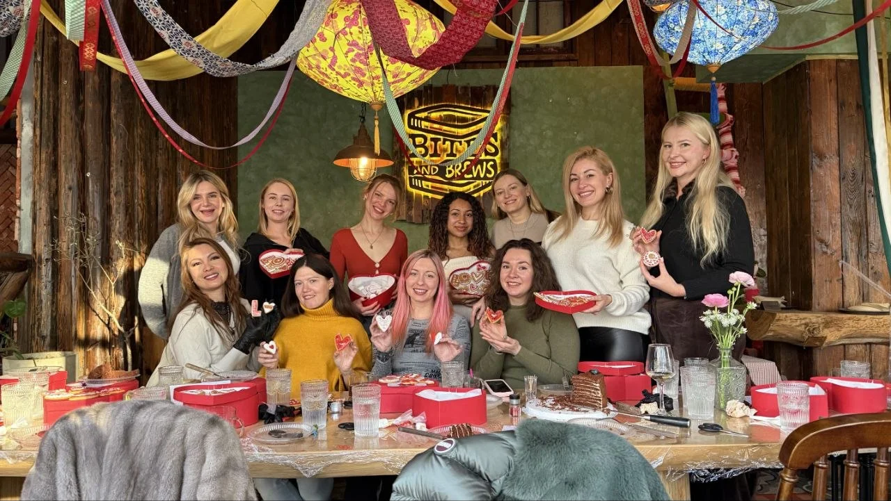

A theme with a purpose
Begin with what interests your group: a technique, a type of dessert or a creative occasion. The theme is agreed before the class.
PASTRY, SHARED WITH OTHERS
Bring people together around pastry. A masterclass at your venue becomes a chance to look closer, ask questions and share the pleasure of making something beautiful.

A CLASS FOR YOUR SPACE
For venues bringing a group together around food and creativity. We discuss the theme and practical arrangements around your guests, your space and the experience you would like to host.
Begin with what interests your group: a technique, a type of dessert or a creative occasion. The theme is agreed before the class.
The balance of demonstration, practical participation and discussion is planned around the chosen theme and the facilities available.
A reason to gather, discover the details of pastry and enjoy a creative moment together. Venue masterclasses begin at 12 guests.
HOW WE WORK TOGETHER
Tell me about your venue and the group you would like to welcome. Together, we can shape a format that suits the setting.
Share the number of guests, their interests and the occasion behind the gathering.
Discuss a theme and the kind of experience you want to create.
Talk through the venue, equipment and practical arrangements before confirming the format.
Bring your group together for the agreed masterclass experience.
GOOD TO KNOW
Venue masterclasses start from 12 guests. Include your expected group size in the enquiry so we can discuss the format and the space.
At your venue. LINA.Pastry is based in Shanghai and available for projects across China and in Moscow. Please share your city and photographs or details of the space.
The format is discussed around the theme, group and venue. We confirm the level of practical participation and the facilities needed before the class is arranged.
Tell me about the experience level of your group. This helps us choose an appropriate theme and format; there is no single fixed programme for every venue.
Equipment, workspace, ingredients and other arrangements depend on the chosen class. These are discussed and agreed as part of planning; include any facilities your venue already has in your enquiry.
LET’S MAKE SOMETHING TOGETHER
Send your venue, preferred date and group size. Tell me what you would love your guests to explore.
Host a masterclass